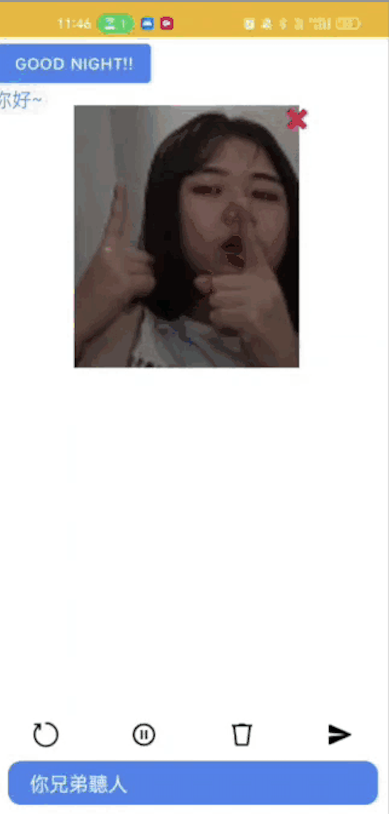

This project aims to build an Android application for real-time recognition of sign language gestures using computer vision techniques.
The app identifies hand shapes and movements captured by the phone’s camera and converts them into text or speech, enabling more accessible communication for the hearing impaired.

We use a combination of image processing algorithms and machine learning models to recognize hand gestures, including classification techniques to identify different signs.
The app is designed for portability, ease of use, and efficiency, ensuring a seamless user experience for real-time sign language communication.
Key Features:
- Real-time sign language gesture recognition through mobile camera.
- Text and speech output for recognized gestures.
- User-friendly interface for easy interaction.
- Machine learning model trained on large sign language datasets for high accuracy.
The app successfully identifies and converts sign language gestures into both text and speech in real-time. The recognition accuracy varies depending on lighting conditions and camera quality, but the app performs well under typical usage scenarios.
Key results from testing included the app's ability to handle complex gestures and provide accurate translations of signs with a delay of less than a second. The machine learning model achieved an accuracy of 85% on the test dataset, which can be improved with further training and more data.
The user feedback was overwhelmingly positive, especially in terms of the app's potential to improve accessibility for people with hearing impairments. Suggestions for improvement include adding support for more sign languages and improving the model's recognition of fast gestures.
GitHub Repository for ML Model GitHub Repository for Appnaisyuanchang@gmail.com
858-933-8169